\(\renewcommand{\AA}{\text{Å}}\)
10.6.2. LAMMPS GitHub tutorial
written by Stefan Paquay
This document describes the process of how to use GitHub to integrate changes or additions you have made to LAMMPS into the official LAMMPS distribution. It uses the process of updating this very tutorial as an example to describe the individual steps and options. You need to be familiar with git and you may want to have a look at the git book to familiarize yourself with some of the more advanced git features used below.
As of fall 2016, submitting contributions to LAMMPS via pull requests on GitHub is the preferred option for integrating contributed features or improvements to LAMMPS, as it significantly reduces the amount of work required by the LAMMPS developers. Consequently, creating a pull request will increase your chances to have your contribution included and will reduce the time until the integration is complete. For more information on the requirements to have your code included into LAMMPS please see this page.
Making an account
First of all, you need a GitHub account. This is fairly simple, just go to GitHub and create an account by clicking the “Sign up for GitHub” button. Once your account is created, you can sign in by clicking the button in the top left and filling in your username or e-mail address and password.
Forking the repository
To get changes into LAMMPS, you need to first fork the lammps/lammps repository on GitHub. At the time of writing, develop is the preferred target branch. Thus go to LAMMPS on GitHub and make sure branch is set to “develop”, as shown in the figure below.
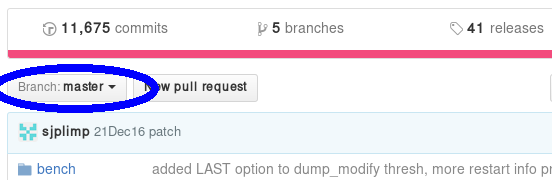
If it is not, use the button to change it to develop. Once it is, use the fork button to create a fork.
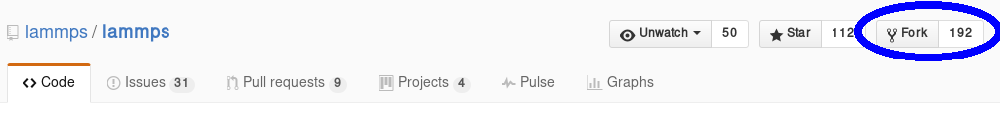
This will create a fork (which is essentially a copy, but uses less resources) of the LAMMPS repository under your own GitHub account. You can make changes in this fork and later file pull requests to allow the upstream repository to merge changes from your own fork into the one we just forked from (or others that were forked from the same repository). At the same time, you can set things up, so you can include changes from upstream into your repository and thus keep it in sync with the ongoing LAMMPS development.
Adding changes to your own fork
Additions to the upstream version of LAMMPS are handled using feature branches. For every new feature, a so-called feature branch is created, which contains only those modification relevant to one specific feature. For example, adding a single fix would consist of creating a branch with only the fix header and source file and nothing else. It is explained in more detail here: feature branch workflow.
Feature branches
First of all, create a clone of your version on GitHub on your local machine via HTTPS:
git clone https://github.com/<your user name>/lammps.git <some name>
or, if you have set up your GitHub account for using SSH keys, via SSH:
git clone git@github.com:<your user name>/lammps.git
You can find the proper URL by clicking the “Clone or download”-button:
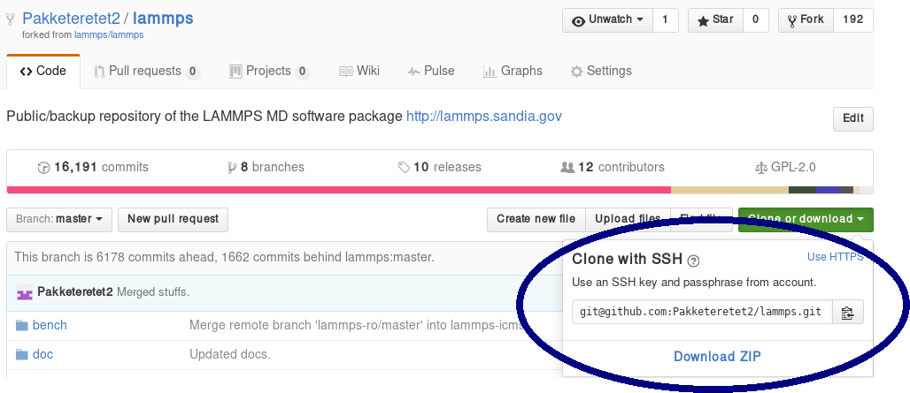
The above command copies (“clones”) the git repository to your local machine to a directory with the name you chose. If none is given, it will default to “lammps”. Typical names are “mylammps” or something similar.
You can use this local clone to make changes and test them without interfering with the repository on GitHub.
To pull changes from upstream into this copy, you can go to the directory and use git pull:
cd mylammps
git checkout develop
git pull https://github.com/lammps/lammps develop
You can also add this URL as a remote:
git remote add upstream https://www.github.com/lammps/lammps
From then on you can update your upstream branches with:
git fetch upstream
and then refer to the upstream repository branches with upstream/develop or upstream/release and so on.
At this point, you typically make a feature branch from the updated branch for the feature you want to work on. This tutorial contains the workflow that updated this tutorial, and hence we will call the branch “github-tutorial-update”:
git fetch upstream
git checkout -b github-tutorial-update upstream/develop
Now that we have changed branches, we can make our changes to our local repository. Just remember that if you want to start working on another, unrelated feature, you should switch branches!
Note
Committing changes to the develop, release, or stable branches is strongly discouraged. While it may be convenient initially, it will create more work in the long run. Various texts and tutorials on using git effectively discuss the motivation for using feature branches instead.
After changes are made
After everything is done, add the files to the branch and commit them:
git add doc/src/Howto_github.txt
git add doc/src/JPG/tutorial*.png
Warning
Do not use git commit -a (or git add -A). The -a flag (or -A flag) will automatically include all modified and new files and that is rarely the behavior you want. It can easily lead to accidentally adding unrelated and unwanted changes into the repository. Instead it is preferable to explicitly use git add, git rm, git mv for adding, removing, renaming individual files, respectively, and then git commit to finalize the commit. Carefully check all pending changes with git status before committing them. If you find doing this on the command-line too tedious, consider using a GUI, for example the one included in git distributions written in Tk, i.e. use git gui (on some Linux distributions it may be required to install an additional package to use it).
After adding all files, the change set can be committed with some useful message that explains the change.
git commit -m 'Finally updated the GitHub tutorial'
After the commit, the changes can be pushed to the same branch on GitHub:
git push
Git will ask you for your user name and password on GitHub if you have not configured anything. If your local branch is not present on GitHub yet, it will ask you to add it by running
git push --set-upstream origin github-tutorial-update
If you correctly type your user name and password, the feature branch should be added to your fork on GitHub.
If you want to make really sure you push to the right repository (which is good practice), you can provide it explicitly:
git push origin
or using an explicit URL:
git push git@github.com:Pakketeretet2/lammps.git
Filing a pull request
Up to this point in the tutorial, all changes were to your clones of LAMMPS. Eventually, however, you want this feature to be included into the official LAMMPS version. To do this, you will want to file a pull request by clicking on the “New pull request” button:
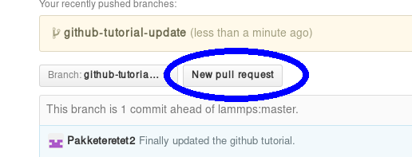
Make sure that the current branch is set to the correct one, which, in this case, is “github-tutorial-update”. If done correctly, the only changes you will see are those that were made on this branch.
This will open up a new window that lists changes made to the repository. If you are just adding new files, there is not much to do, but I suppose merge conflicts are to be resolved here if there are changes in existing files. If all changes can automatically be merged, green text at the top will say so and you can click the “Create pull request” button, see image.
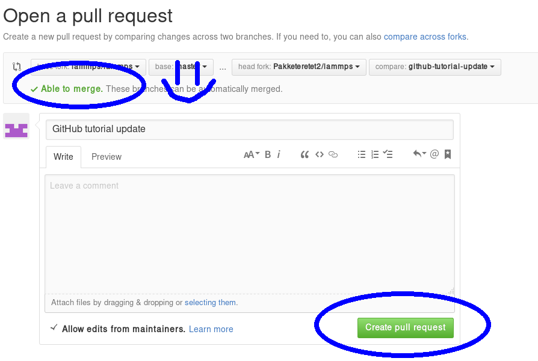
Before creating the pull request, make sure the short title is accurate and add a comment with details about your pull request. Here you write what your modifications do and why they should be incorporated upstream.
Note the checkbox that says “Allow edits from maintainers”. This is checked by default checkbox (although in my version of Firefox, only the checkmark is visible):
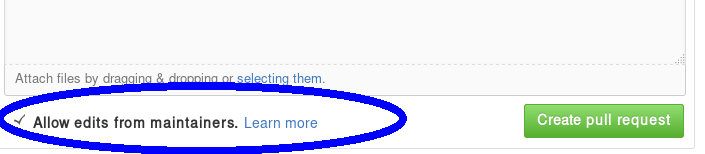
If it is checked, maintainers can immediately add their own edits to the pull request. This helps the inclusion of your branch significantly, as simple/trivial changes can be added directly to your pull request branch by the LAMMPS maintainers. The alternative would be that they make changes on their own version of the branch and file a reverse pull request to you. Just leave this box checked unless you have a very good reason not to.
Now just write some nice comments and click on “Create pull request”.
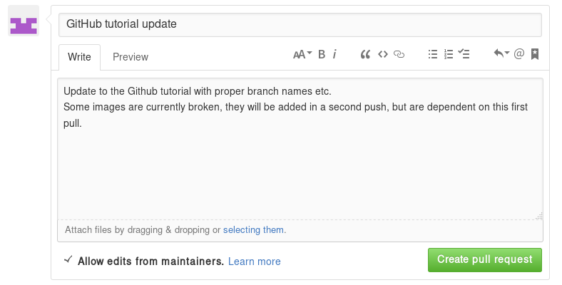
After filing a pull request
Note
When you submit a pull request (or ask for a pull request) for the first time, you will receive an invitation to become a LAMMPS project collaborator. Please accept this invite as being a collaborator will simplify certain administrative tasks and will probably speed up the merging of your feature, too.
You will notice that after filing the pull request, some checks are performed automatically:
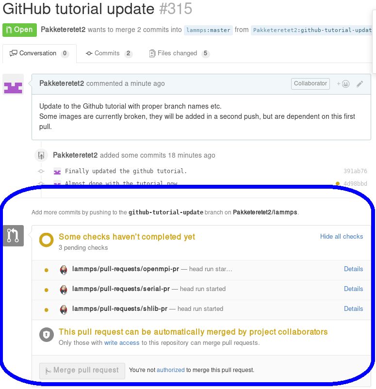
If all is fine, you will see this:
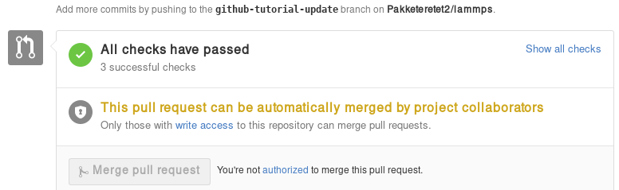
If any of the checks are failing, your pull request will not be processed, as your changes may break compilation for certain configurations or may not merge cleanly. It is your responsibility to remove the reason(s) for the failed test(s). If you need help with this, please contact the LAMMPS developers by adding a comment explaining your problems with resolving the failed tests.
A few further interesting things (can) happen to pull requests before they are included.
Additional changes
First of all, any additional changes you push into your branch in your repository will automatically become part of the pull request:
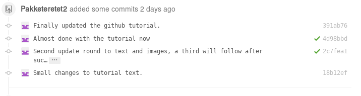
This means you can add changes that should be part of the feature after filing the pull request, which is useful in case you have forgotten them, or if a developer has requested that something needs to be changed before the feature can be accepted into the official LAMMPS version. After each push, the automated checks are run again.
Labels
LAMMPS developers may add labels to your pull request to assign it to categories (mostly for bookkeeping purposes), but a few of them are important: needs_work, work_in_progress, run_tests, test_for_regression, and ready_for_merge. The first two indicate, that your pull request is not considered to be complete. With “needs_work” the burden is on exclusively on you; while “work_in_progress” can also mean, that a LAMMPS developer may want to add changes. Please watch the comments to the pull requests. The two “test” labels are used to trigger extended tests before the code is merged. This is sometimes done by LAMMPS developers, if they suspect that there may be some subtle side effects from your changes. It is not done by default, because those tests are very time-consuming. The ready_for_merge label is usually attached when the LAMMPS developer assigned to the pull request considers this request complete and to trigger a final full test evaluation.
Reviews
As of Fall 2021, a pull request needs to pass all automatic tests and at least 1 approving review from a LAMMPS developer with write access to the repository before it is eligible for merging. In case your changes touch code that certain developers are associated with, they are auto-requested by the GitHub software. Those associations are set in the file .github/CODEOWNERS Thus if you want to be automatically notified to review when anybody changes files or packages, that you have contributed to LAMMPS, you can add suitable patterns to that file, or a LAMMPS developer may add you.
Otherwise, you can also manually request reviews from specific developers, or LAMMPS developers - in their assessment of your pull request - may determine who else should be reviewing your contribution and add that person. Through reviews, LAMMPS developers also may request specific changes from you. If those are not addressed, your pull requests cannot be merged.
Assignees
There is an assignee property for pull requests. If the request has not been reviewed by any developer yet, it is not assigned to anyone. After revision, a developer can choose to assign it to either a) you, b) a LAMMPS developer (including him/herself) or c) Axel Kohlmeyer (akohlmey).
Case a) happens if changes are required on your part
Case b) means that at the moment, it is being tested and reviewed by a LAMMPS developer with the expectation that some changes would be required. After the review, the developer can choose to implement changes directly or suggest them to you.
Case c) means that the pull request has been assigned to the developer overseeing the merging of pull requests into the develop branch.
In this case, Axel assigned the tutorial to Steve:
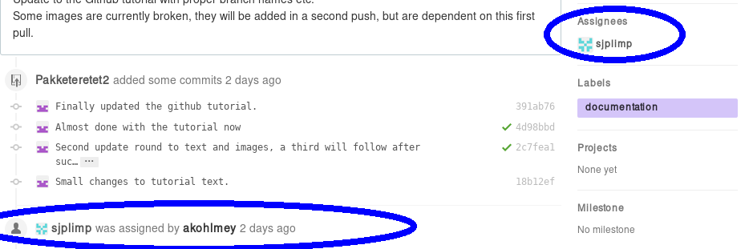
Edits from LAMMPS maintainers
If you allowed edits from maintainers (the default), any LAMMPS maintainer can add changes to your pull request. In this case, both Axel and Richard made changes to the tutorial:
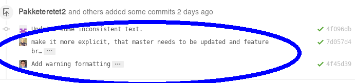
Reverse pull requests
Sometimes, however, you might not feel comfortable having other people push changes into your own branch, or maybe the maintainers are not sure their idea was the right one. In such a case, they can make changes, reassign you as the assignee, and file a “reverse pull request”, i.e. file a pull request in your forked GitHub repository to include changes in the branch, that you have submitted as a pull request yourself. In that case, you can choose to merge their changes back into your branch, possibly make additional changes or corrections and proceed from there. It looks something like this:
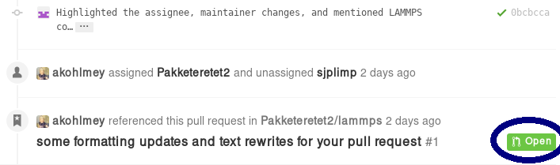
For some reason, the highlighted button did not work in my case, but I can go to my own repository and merge the pull request from there:
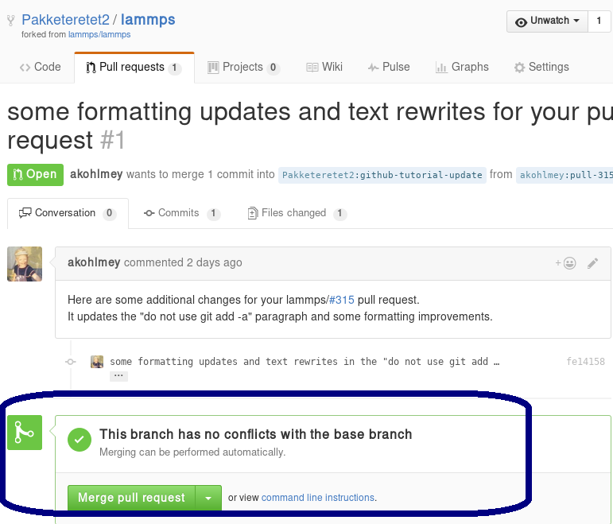
Be sure to check the changes to see if you agree with them by clicking on the tab button:
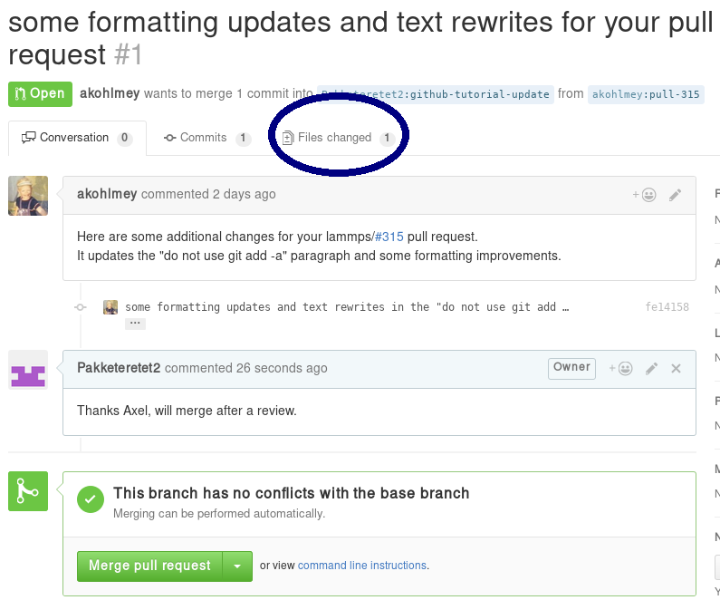
In this case, most of it is changes in the markup and a short rewrite of Axel’s explanation of the “git gui” and “git add” commands.
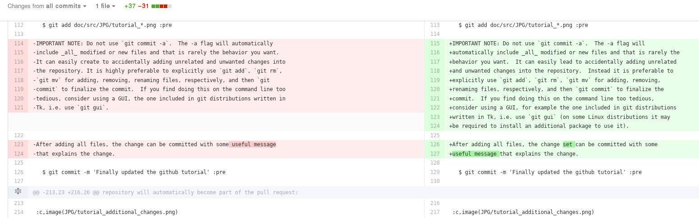
Because the changes are OK with us, we are going to merge by clicking on “Merge pull request”. After a merge it looks like this:
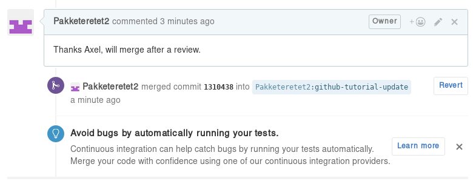
Now, since in the meantime our local text for the tutorial also changed, we need to pull Axel’s change back into our branch, and merge them:
git add Howto_github.txt
git add JPG/tutorial_reverse_pull_request*.png
git commit -m "Updated text and images on reverse pull requests"
git pull
In this case, the merge was painless because git could auto-merge:
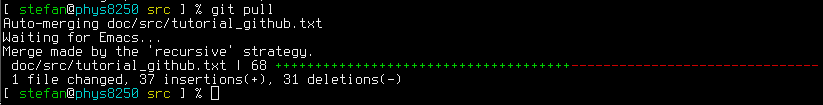
With Axel’s changes merged in and some final text updates, our feature branch is now perfect as far as we are concerned, so we are going to commit and push again:
git add Howto_github.txt
git add JPG/tutorial_reverse_pull_request6.png
git commit -m "Merged Axel's suggestions and updated text"
git push git@github.com:Pakketeretet2/lammps
This merge also shows up on the lammps GitHub page:
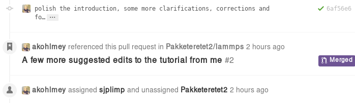
After a merge
When everything is fine, the feature branch is merged into the develop branch:
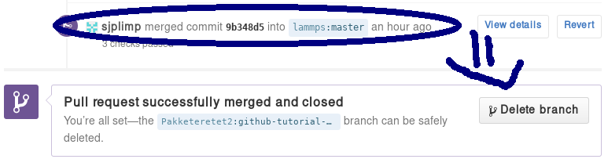
Now one question remains: What to do with the feature branch that got merged into upstream?
It is in principle safe to delete them from your own fork. This helps keep it a bit more tidy. Note that you first have to switch to another branch!
git checkout develop
git pull https://github.com/lammps/lammps develop
git branch -d github-tutorial-update
If you do not pull first, it is not really a problem but git will warn you at the next statement that you are deleting a local branch that was not yet fully merged into HEAD. This is because git does not yet know your branch just got merged into LAMMPS upstream. If you first delete and then pull, everything should still be fine. You can display all branches that are fully merged by:
Finally, if you delete the branch locally, you might want to push this to your remote(s) as well:
git push origin :github-tutorial-update
Recent changes in the workflow
Some recent changes to the workflow are not captured in this tutorial. For example, in addition to the develop branch, to which all new features should be submitted, there is also a release, a stable, and a maintenance branch; the release branch is updated from the develop branch as part of a “feature release”, and stable (together with release) are updated from develop when a “stable release” is made. In between stable releases, selected bug fixes and infrastructure updates are back-ported from the develop branch to the maintenance branch and occasionally merged to stable as an update release.
Furthermore, the naming of the release tags now follow the pattern “patch_<Day><Month><Year>” to simplify comparisons between releases. For stable releases additional “stable_<Day><Month><Year>” tags are applied and update releases are tagged with “stable_<Day><Month><Year>_update<Number>”, Finally, all releases and submissions are subject to automatic testing and code checks to make sure they compile with a variety of compilers and popular operating systems. Some unit and regression testing is applied as well.
A detailed discussion of the LAMMPS developer GitHub workflow can be found in the file doc/github-development-workflow.md